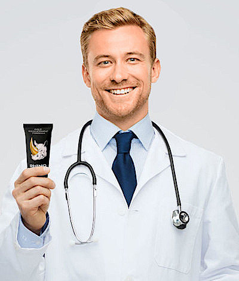

Numele meu este dr. Demian și doresc să te informez despre o metodă științifică pentru mărirea dimensiunii țesutului erectil și a penisului. Rezultatul acestei metode este foarte vizibil: Penisul tău va deveni mai mare și mai gros, durata erecției va fi mai mare și îți vei îmbunătăți viața sexuală, făcându-ți iubita să se termine de cinci ori consecutiv. În loc de promisiuni, îți prezint rezultate medicale și experimente care dovedesc că acest produs îți poate mări virilitatea și durata erecției până la 30-40 de minute.
Nu contează dacă este prima dată sau a zecea oară când încerci să rezolvi această problemă. Am vești bune pentru tine, mai bune decât ai primit vreodată, cu privire la mărirea penisului.
Dacă ai încercat să-ți mărești penisul, probabil știi deja că întinderea și pomparea sunt inutile și totul rămâne la fel de jenant. Dar te voi ajuta să rezolvi această problemă și să fii pregătit de fiecare dată când îți deschizi pantalonii în fața unei femei. Pe de altă parte, dacă este prima dată când încerci să-ți mărești virilitatea, ești pe cale să scapi definitiv de timiditate, iar femeile te vor dori. Deoarece îți vor adora „arma” și vor dori să o folosească. De asemenea, vei economisi mii de lei cheltuiți pe dispozitive inutile pentru mărirea penisului. Vreau să-ți arăt o fotografie reală a lui Gheorghe, asistentul meu, care și-a mărit penisul cu 6,2 cm și a prelungit durata actului sexual cu 32 de minute.
Aceste rezultate au fost dovedite de mai multe experimente medicale. Au fost măsurate concentrația de testosteron și cantitatea și dimensiunea țesuturilor din organele voluntarilor înainte și după vindecare. La final, procesul a fost repetat, cu mai multe persoane. Rezultatele pozitive au apărut nu doar la voluntari, ci sunt dovedite și de clienți reali. Sunt niște povești foarte emoționante.
+ 6,5 cm
Trebuie să-l cumperi!
Rhino Gold Gel este cea mai bună soluție pentru un penis puternic. Utilizându-l, vei fi plin de energie și vei avea mereu chef să o faci. Vei avea performanțe excelente și nicio femeie nu te va uita. Cu o superdimensiune de 21, nimeni nu te va putea refuza. Un vot pentru acest produs!
Ioan, 31 de ani+ 6,2 cm
Cu Rhino Gold Gel, penisul meu a devenit cu adevărat PUTERNIC.
Am fost atât de sătul să încerc produse similare, care nu aveau niciun rezultat! Acesta este singurul produs eficient, eu și toți prietenii mei l-am încercat. După primul pachet, nu am regretat nicio clipă decizia de a-l folosi.
Păcat că nu au existat reduceri atunci când l-am comandat eu.
Olimpiu, 34 de ani+ 7,1 cm
Cum ar putea fi un bărbat mulțumit cu o „armă” de 10 cm???
Am citit despre aceste produse pentru mărirea penisului pe un forum despre fitness. Am decis să încerc din curiozitate și pentru că promiteau că îmi vor da 100% banii înapoi dacă nu voi fi mulțumit, deci, nu aveam nimic de pierdut.
Rezultatul este: scula mi-a crescut cu 7,1 cm și nu mai sunt deprimat. Nu sunt doar mulțumit de rezultate, sunt extrem de fericit!
Nicu, 23 de ani+ 6,4 cm
Soția mea vrea să facem dragoste
Nu mint, dar mă simțeam oribil atunci când soția mea nu mă dorea. În cele din urmă, am decis să încerc acest produs, pentru că nu trebuie să urmezi o dietă strictă sau să faci exerciții, deci, nu a trebuit să schimb nimic în stilul meu de viață.
Datorită lui Rhino Gold Gel, penisul meu a crescut cu 6 cm și acum pot face sex mai mult timp. Acum o fac să se termine de cel puțin cinci ori atunci când facem sex și îi aud gemetele fericite.
+ 6,8 cm
Cea mai rapidă metodă de a-ți mări penisul
Îmi place ca toate lucrurile să fie în regulă. De aceea am măsurat rezultatul în fiecare zi. După câteva zile, penisul meu a crescut cu 1,1 cm. După o săptămână, a crescut cu 2,8 cm și apoi cu 4,3 cm. În total, penisul meu a crescut cu 6,8 cm în 30 de zile, iar erecția dura 24 de minute. Foarte impresionant.
Prețul produsului este foarte accesibil: poți comanda Rhino Gold Gel la reducere, deci, vă recomand să nu ratați ocazia!
+ 6,7 cm
5 orgasme în 23 de minute
Tovarășul s-a sculat, iar erecția durează de opt ori mai mult decât de obicei. Este mai mare și mai ferm, iar iubitei mele îi place foarte mult. Produsul este foarte bun. De fiecare dată când facem dragoste, se încheie cu gemete fericite. Nu e nimic dificil și nu voi renunța!
David, 30 de ani+ 6,2 cm
Nu există metodă mai bună pentru mărirea penisului.
Înainte de a folosi Rhino Gold Gel, am avut multe eșecuri, așa că am început să mă simt foarte prost. Un prieten m-a sfătuit să folosesc acest produs. A durat foarte puțin să-mi redescopăr posibilitățile și să redobândesc încredere în forțele proprii.
Nu toate fetele au gura potrivită, iar libidoul meu este întotdeauna la cote maxime și vreau mai mult. Nu mă mai tem de sex și nu-mi este rușine de scula mea de 19,3 cm.
+ 7 cm
Adevărul gol-goluț
Îmi era mereu teamă că fetele vor râde de mine, de aceea am comandat Rhino Gold Gel. Îmi era rușine de penisul meu mic, dar acum îl pot scoate cu încredere în fața oricărei fete. E de necrezut! Pot ajunge atât de adânc și se potrivește atât de bine, încât fiecare fată geme de plăcere. E un sunet minunat. Acesta este sexul adevărat.
Vreau să-i mulțumesc lui Rhino Gold Gel, deoarece m-a ajutat să experimentez senzații atât de plăcute!
Este atât de ușor, pur și simplu folosești produsul timp de 5-15 zile. După aceea, îți trăiești viața ca de obicei, dar simți că erecția este diferită. Nu trebuie să modifici nimic în alimentație, nu ai nevoie de pompe sau exerciții speciale. Organul tău va face țesutul erectil să crească. Procesul nu este magic, ci este o metodă științifică. Prin această metodă științifică, toate funcțiile amestecului special îți vor ajuta penisul să se scoale rapid, va mări și nivelul de testosteron, făcând venele mai groase și îmbunătățind circulația sanguină și libidoul.
Formula produsului este complet naturală și nu există efecte secundare. Practic, conține ingrediente valoroase și extracte din plante. Rezultatul acestei combinații a fost demonstrat în laborator în multe țări și a primit multe recenzii pozitive de la clienți. Toate aceste plante au fost utilizate de mii de ani în mai multe locuri din lume, cu același scop: îmbunătățirea atractivității masculine prin mărirea penisului. Formula a fost patentată și nu poate fi dezvăluită, dar iată care sunt ingredientele principale:
Rhino Gold Gel a primit un premiu foarte important, fiind desemnat drept cea mai bună metodă pentru mărirea penisului în 2018.
Frunză de Damiana
Afrodiziac natural, crește atracția și perseverență, previne disfuncția erectilă și infertilitatea, stimulează terminațiile nervoase, îmbunătățește senzațiile plăcute si de orgasm, înlătură oboseala și stresul, normalizează echilibrul hormonal, stabilizează activitatea sistemului genitourinar.
Muira Puama
Afrodiziac puternic, îmbunătățește aspectele fiziologice și psihologice ale sexului, crește libidoul, previne dezvoltarea disfuncției erectile, ameliorează supraexcitarea, stimulează diviziunea celulelor penisului, ajută la creșterea lungimii și grosimii penisului.
Maca peruviană
Stimulează creșterea si diviziunea celulelor penisului, crește volumul și calitatea spermei, întărește pereții vaselor penisului, protejează de infecțiile urogenitale, previne ejacularea prematură, crește rezistența, activează sinteza de testosteron, crește sensibilitatea, crește sensibilitatea și prelungește orgasmul.
L-arginină
Normalizează alimentarea cu sânge în organele pelviene, stimulează fluxul sanguin către penis, crește activitatea spermatozoizilor, stimulează libidoul, activează sinteza testosteronului, prelungește sexul, normalizează ejacularea, previne tulburările de potență.
Nu contează dacă ai mai folosit alte produse sau nu... Nu contează dacă partenera ta a mimat orgasmul sau nu... Rhino Gold Gel este o soluție sigură, economică, dovedită ca fiind foarte eficientă pentru mărirea penisului. Dar, la urma-urmei, tu ești cel care trebuie să decidă.
Am spus tot ce era de spus despre această metodă. Știi cum acționează și care sunt efectele sale, precum și ce au afirmat clienții reali. Știu că este destul de dificil să faci primul pas pentru mărirea penisului și îmbunătățirea vieții sexuale. De aceea, vreau să mai fac ceva pentru tine. Îți pun la dispoziție o ofertă personală. Vreau să nu îți asumi niciun risc și să folosești Rhino Gold Gel. Folosește-l și eu voi avea grijă de restul. Oferta mea este următoarea:
Sunt un om de știință, de aceea vreau să știu câți bărbați au fost afectați de jenă și probleme pe care numai ei le cunosc în viața de zi cu zi. Din păcate, nu îți pot mări penisul fără nicio intervenție și nici nu îți pot aduce partenera la orgasm în locul tău. Ceea ce pot face este să îți pun la dispoziție cea mai bună alegere. De aceea, îți over acest sfat simplu, nu e nicio înșelătorie la mijloc.
În 30 de zile, penisul tău va crește cu cel puțin 6 cm și o vei aduce pe partenera ta la orgasm de cinci ori.
O ofertă simplă: Plătești pentru rezultate, nu pentru promisiuni. Pentru a beneficia de ofertă, completează formularul.
Garanție 100%. Produsul este ambalat într-o cutie gri fără sigle, semne sau informații care ar putea dezvălui conținutul.
Dacă Rhino Gold Gel nu funcționează, îți recomand să consulți un medic, pentru a verifica dacă totul este în regulă cu penisul tău. Dacă nu ai probleme grave în structura țesutului erectil, nimic nu te poate împiedica să obții rezultate incredibile. Absolut nimic! Reține că stocul este limitat. Aceasta este o ofertă specială și nu va mai fi disponibilă altă dată, așa că PROFITĂ ACUM!
185 de persoane citesc acest articol acum.